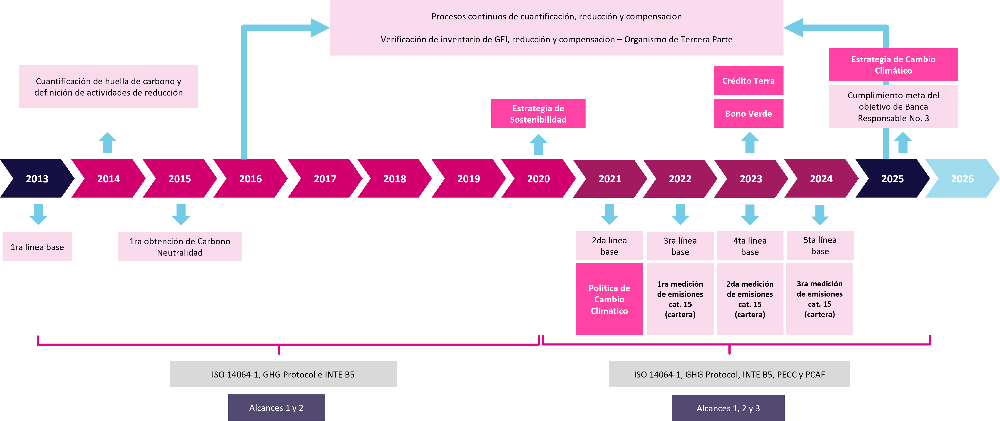
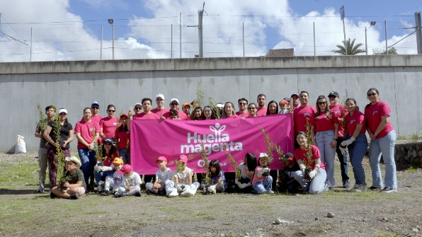
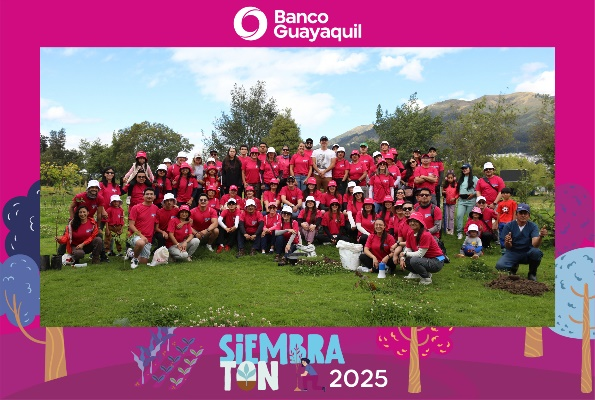

[GRI 3-3, 301-1, 302-1, 302-3, 302-4, 303-3, 305-1, 305-2, 305-3, 305-4, 305-5, 306-3, 306-4, 306-5, 413-1 | SASB FN-CB-410b.1, FN-CB-410b.2, FN-CB-410b.3, FN-CB-410b.4 | NIIF S1 — Estrategia | NIIF S2 — Gobernanza climática, Estrategia climática, Gestión de riesgos climáticos, Métricas y objetivos climáticos]
Cultura de sostenibilidad
[GRI 2-29, 413-1 | NIIF S1 — Estrategia]
En Banco Guayaquil promovemos una cultura de sostenibilidad transversal, basada en la sensibilización, capacitación y medición continua, con el fin de fortalecer una toma de decisiones responsable y generar valor compartido para la sociedad y el ambiente.
Estas acciones contribuyen a consolidar una cultura organizacional sustentada en la ética, el cumplimiento normativo y la eficiencia operativa, con impacto en la gestión del talento y en el desempeño sostenible de nuestra cadena de valor. En este sentido, durante 2025, desarrollamos las siguientes iniciativas:
| Iniciativa | Detalle |
|---|---|
| E-learning de sostenibilidad | Dirigido a colaboradores, con contenidos enfocados en los beneficios de la sostenibilidad en las organizaciones, el concepto de grupos de interés y la importancia de establecer relaciones sólidas con ellos. Participaron 2.826 colaboradores, equivalente al 95 % de la plantilla total con corte a la fecha de capacitación. |
| Sensibilización en buenas prácticas ambientales | Incorporada en las inducciones de nuevos colaboradores, incluyendo temas básicos de sostenibilidad del Banco. |
| Lanzamiento del Voluntariado Huella Magenta | Enfocado en promover la cultura de sostenibilidad del Banco y generar valor compartido con la sociedad y el ambiente. Los detalles de esta iniciativa se presentan en la sección 8.7 del presente reporte. |
| Encuesta interna de cultura de sostenibilidad | Desarrollada con el objetivo de evaluar la percepción y el conocimiento en temas de sostenibilidad. Los resultados de esta encuesta se detallan en la sección 8.9.1 del presente reporte. |
| Encuesta externa de desempeño en sostenibilidad - SSINDEX | Destinada a evaluar nuestro desempeño ASG a partir de la percepción de nuestros grupos de interés, considerando la cultura interna, la coherencia externa y la capacidad de generar impacto social y ambiental. Los resultados de esta encuesta se detallan en la sección 8.9.2 del presente reporte. |
| Taller y capacitaciones de sostenibilidad para proveedores | Espacios de formación dirigidos a proveedores y socios estratégicos, a través de los cuales se socializaron requerimientos, estándares y buenas prácticas aplicables a la relación comercial con el Banco. Los detalles de estas iniciativas se presentan en la sección 9.3 del presente reporte. |
Uso responsable de recursos e insumos
A continuación, compartimos, los recursos e insumos que más utilizamos, junto con las acciones que implementamos para garantizar su uso responsable:
Resumen de acciones implementadas para el uso responsable de recursos e insumos
| Recurso o insumo | Aplicación | Acciones de uso responsable | Iniciativas relacionadas |
|---|---|---|---|
Electricidad |
Funcionamiento de equipos electrónicos (equipos de climatización, equipos de ofimática, servidores, cajeros automáticos, etc.) y luminarias |
|
|
Papel |
Actividades administrativas y operativas |
|
|
Material de oficina |
Actividades administrativas y operativas |
|
|
Agua |
Consumo de los colaboradores Funcionamiento de los servicios higiénicos Limpieza de las instalaciones |
|
|
Combustibles |
Abastecimiento de los generadores eléctricos de emergencia (diésel) Cocción y calentamiento de alimentos (GLP) Abastecimiento de la flota de vehículos (diésel, gasolina y ecopaís) |
|
|
Estos son los datos más relevantes sobre el consumo por colaborador de recursos e insumos en nuestros edificios principales durante el 2025:
Consumo anual por colaborador de recursos e insumos en nuestros edificios principales1 2024 - 2025
| Recurso o insumo | Unidad | Consumo por colaborador | Variación 2025-2024 | |
|---|---|---|---|---|
| 2024 | 2025 | |||
Electricidad2 |
MWh/colaborador | 2,6 | 2,1 | Cada colaborador redujo su consumo eléctrico en un 18,8 %. |
Papel3 |
kg de papel/colaborador | 7,5 | 5,6 | Cada colaborador redujo su consumo de papel en un 25,3 %. |
Agua4 |
m3 de agua/colaborador | 9,8 | 8,9 | Cada colaborador redujo su consumo de agua en un 9,2 %. |
1. Nuestros edificios principales son: Matriz, Anexo, Multiparqueo, Sucursal Mayor Quito y Sucursal Cuenca.
2. Cálculo del indicador de consumo anual de electricidad por colaborador en edificios principales: utilizamos el consumo eléctrico anual de nuestros edificios principales, así como el número de colaboradores en dichas instalaciones al 31 de diciembre de 2025. Empleamos la siguiente expresión:
$\mathbf{Consumo\ anual\ de\ electricidad\ por\ colaborador}\left( \frac{\mathbf{MWh}}{\mathbf{colaborador*año}} \right)\mathbf{=}\frac{Consumo\ eléctrico\ anual\ de\ los\ edificios\ principales\ \left( \frac{MWh}{año} \right)\ }{No.\ \ de\ colaboradores\ en\ edificios\ principales\ al\ 31\ de\ diciembre\ de\ 2025\ (colaborador)}$
3. Cálculo del indicador de consumo anual de papel por colaborador en edificios principales: utilizamos los registros del área de proveeduría del Banco respecto a nuestros edificios principales y los pesos de los ítems de papel (determinados con balanzas calibradas), así como el número de colaboradores en dichas instalaciones al 31 de diciembre de 2025. Empleamos la siguiente expresión:
$$\mathbf{Consumo}\ \mathbf{anual}\ \mathbf{de}\ \mathbf{papel}\ \mathbf{por}\ \mathbf{colaborador}\left( \frac{\mathbf{kg}}{\mathbf{colaborador}*\mathbf{a}ñ\mathbf{o}} \right) = \frac{No.\ de\ unidades\ de\ ítems\ de\ papel\ de\ edificios\ principales\left( \frac{u}{año} \right)*Peso\ por\ unidad\ de\ ítem\ de\ papel\ \left( \frac{kg}{u} \right)}{No.\ \ de\ colaboradores\ en\ edificios\ principales\ al\ 31\ de\ diciembre\ de\ 2025\ (colaborador)\ }$$
4. Cálculo del indicador de consumo anual de agua por colaborador en edificios principales: utilizamos el consumo de agua anual de nuestros edificios principales, así como el número de colaboradores en dichas instalaciones al 31 de diciembre de 2025. Empleamos la siguiente expresión:
$$\mathbf{Consumo}\ \mathbf{anual}\ \mathbf{de}\ \mathbf{agua}\ \mathbf{por}\ \mathbf{colaborador}\left( \frac{\mathbf{m}^{\mathbf{3}}}{\mathbf{colaborador}*\mathbf{a}ñ\mathbf{o}} \right) = \frac{Consumo\ de\ agua\ anual\ de\ los\ edificios\ principales\ \left( \frac{m^{3}}{año} \right)}{No.\ \ de\ colaboradores\ en\ edificios\ principales\ al\ 31\ de\ diciembre\ de\ 2025\ (colaborador)\ }$$
A continuación, en las secciones 11.3, 11.4 y 11.5 se presentan indicadores referentes a la gestión de nuestros residuos y desechos, consumo energético, consumo de agua, consumo de papel y emisiones de GEI en nuestros edificios principales. Nos enfocamos en dichas instalaciones bajo un enfoque de control operacional (conforme se detalla en la sección 11.5.2 del presente reporte), en concordancia con el alcance de nuestro Inventario de GEI, que toma en consideración que en estos espacios se gestionan la mayor parte de nuestras transacciones y se concentran nuestras principales actividades administrativas y operativas. Además, estos edificios concentran el 60,1 % de los colaboradores con respecto a la plantilla total con corte a diciembre de 2025, se han mantenido operativos de forma continua y no se prevé la finalización de sus operaciones a largo plazo.
Gestión de residuos y desechos
[GRI 306-3, 306-4, 306-5]
Siguiendo la jerarquía de gestión de residuos y desechos establecida por la normativa ambiental nacional, fomentamos en nuestros colaboradores prácticas orientadas a la prevención y reducción en la fuente, así como trabajamos con gestores autorizados por el MAE para el aprovechamiento de estos materiales y su disposición final responsable. Al respecto, contamos con contenedores diferenciados en nuestras instalaciones para realizar una separación diferenciada en los puntos de generación y facilitar la entrega a los gestores:
Residuos reciclables |
Desechos peligrosos y especiales |
Desechos comunes |
|---|---|---|
| Contenedores empleados para disponer residuos tales como: cartón, papel, plástico, entre otros. Estos residuos los entregamos a gestores que se encargan de su aprovechamiento (reciclaje, reutilización, entre otros). | Contenedores dispuestos para disponer los desechos peligrosos (biopeligrosos activos, objetos cortopunzantes, tóneres usados, entre otros) y los desechos especiales (equipos electrónicos usados y aceites vegetales usados), los cuales entregamos a gestores que se encargan de su tratamiento y disposición final. | Contenedores empleados para desechar elementos que ya no pueden ser aprovechados (desechos de servicios higiénicos, papel térmico, entre otros), los cuales entregamos a gestores municipales encargados de su disposición final. |
A continuación, se presentan los datos consolidados de los residuos y desechos generados en nuestros edificios principales en los años 2024 y 2025. La información se basa en registros internos y en reportes de los gestores ambientales autorizados, en función de mediciones directas de peso.
El alcance de esta información se limita a dichas instalaciones, ya que estas concentran el mayor volumen de colaboradores y operaciones administrativas y operativas de la institución, representando la generación más significativa de residuos y desechos.
Residuos y desechos por composición generados en nuestros edificios principales1 en toneladas métricas (t) 2024 - 2025
| Composición de los residuos | Residuos y desechos no destinados a eliminación | Residuos y desechos destinados a eliminación | Residuos y desechos generados | ||||||
|---|---|---|---|---|---|---|---|---|---|
| 2024 | 2025 | Var. 2025-2024 (%) | 2024 | 2025 | Var. 2025-2024 (%) | 2024 | 2025 | Var. 2025-2024 (%) | |
| Residuos y desechos no peligrosos2 | |||||||||
| Desechos comunes | 0,000 | 0,000 | NA | 61,706 | 92,002 | 49,1 % | 61,706 | 92,002 | 49,1 % |
| Cartón | 3,012 | 2,569 | -14,7 % | 0,000 | 0,000 | NA | 3,012 | 2,569 | -14,7 % |
| Chatarra | 2,274 | 0,000 | -100,0 % | 0,000 | 0,000 | NA | 2,274 | 0,000 | -100,0 % |
| Plástico | 0,172 | 0,139 | -19,1 % | 0,000 | 0,000 | NA | 0,172 | 0,139 | -19,1 % |
| Papel | 0,060 | 0,776 | 1197,2 % | 0,000 | 0,000 | NA | 0,060 | 0,776 | 1197,2 % |
| Subtotal residuos y desechos no peligrosos | 5,518 | 3,485 | -36,8 % | 61,706 | 92,002 | 49,1 % | 67,225 | 95,488 | 42,0 % |
| Desechos especiales2 | |||||||||
| Lodos de trampa de grasa | 0,000 | 0,000 | NA | 1,574 | 2,990 | 90,0 % | 1,574 | 2,990 | 90,0 % |
| Aceites vegetales usados | 0,000 | 0,000 | NA | 0,632 | 0,756 | 19,7 % | 0,632 | 0,756 | 19,7 % |
| Equipos electrónicos en desuso | 0,012 | 0,013 | 10,0 % | 0,000 | 0,000 | NA | 0,012 | 0,013 | 10,0 % |
| Subtotal desechos especiales | 0,012 | 0,013 | 10,0 % | 2,206 | 3,746 | 69,9 % | 2,218 | 3,759 | 69,5 % |
| Desechos peligrosos2 | |||||||||
| Productos químicos caducados | 0,000 | 0,000 | NA | 0,247 | 0,000 | -100,0 % | 0,247 | 0,000 | -100,0 % |
| Tóneres usados | 0,219 | 0,169 | -23,0 % | 0,000 | 0,000 | NA | 0,219 | 0,169 | -23,0 % |
| Partes de equipos electrónicos usados | 0,000 | 0,000 | NA | 0,000 | 0,106 | NA | 0,000 | 0,106 | NA |
| Luminarias usadas | 0,000 | 0,000 | NA | 0,000 | 0,038 | NA | 0,000 | 0,038 | NA |
| Baterías usadas | 0,000 | 0,000 | NA | 0,029 | 0,000 | -100,0 % | 0,029 | 0,000 | -100,0 % |
| Desechos biopeligrosos3 | 0,000 | 0,000 | NA | 0,017 | 0,028 | 63,9 % | 0,017 | 0,028 | 63,9 % |
| Fármacos caducados | 0,000 | 0,000 | NA | 0,000 | 0,003 | NA | 0,000 | 0,003 | NA |
| Subtotal desechos peligrosos | 0,219 | 0,169 | -23,0 % | 0,293 | 0,174 | -40,4 % | 0,512 | 0,343 | -33,0 % |
| Total | 5,750 | 3,667 | -36,2 % | 64,205 | 95,923 | 49,4 % | 69,954 | 99,590 | 42,4 % |
1. Nuestros edificios principales son: Matriz, Anexo, Multiparqueo, Sucursal Mayor Quito y Sucursal Cuenca.
2. La clasificación de los residuos y desechos está determinada en función de la normativa ambiental nacional vigente.
3. Incluye desechos biopeligrosos activos y objetos cortopunzantes de los dispensarios médicos de las instalaciones.
4. NA: Los ítems sin valor en 2024 no tienen variación calculable al no contar con año base de referencia.
Residuos y desechos generados en nuestros edificios principales1 no destinados a eliminación por operación de valorización, en toneladas métricas (t) 2024 - 2025
| Operación de valorización | En las instalaciones | Fuera de las instalaciones | Total | ||||||
|---|---|---|---|---|---|---|---|---|---|
| 2024 | 2025 | Var. 2025-2024 (%) | 2024 | 2025 | Var. 2025-2024 (%) | 2024 | 2025 | Var. 2025-2024 (%) | |
| Residuos y desechos no peligrosos2 | |||||||||
| Preparación para la reutilización | 0,000 | 0,000 | NA | - | - | NA | - | - | NA |
| Reciclaje | 0,000 | 0,000 | NA | - | - | NA | - | - | NA |
| Otras operaciones de valorización | 0,000 | 0,000 | NA | 5,518 | 3,485 | -36,8 % | 5,518 | 3,485 | -36,8 % |
| Subtotal residuos y desechos no peligrosos | 0,000 | 0,000 | NA | 5,518 | 3,485 | -36,8 % | 5,518 | 3,485 | -36,8 % |
| Desechos especiales2 | |||||||||
| Preparación para la reutilización | 0,000 | 0,000 | NA | - | - | NA | - | - | NA |
| Reciclaje | 0,000 | 0,000 | NA | 0,012 | 0,013 | 10,0 % | 0,012 | 0,013 | 10,0 % |
| Otras operaciones de valorización | 0,000 | 0,000 | NA | - | - | NA | - | - | NA |
| Subtotal desechos especiales | 0,000 | 0,000 | NA | 0,012 | 0,013 | 10,0 % | 0,012 | 0,013 | 10,0 % |
| Desechos peligrosos2 | |||||||||
| Preparación para la reutilización | 0,000 | 0,000 | NA | 0,219 | 0,169 | -23,0 % | 0,219 | 0,169 | -23,0 % |
| Reciclaje | 0,000 | 0,000 | NA | - | - | NA | - | - | NA |
| Otras operaciones de valorización | 0,000 | 0,000 | NA | - | - | NA | - | - | NA |
| Subtotal desechos peligrosos | 0,000 | 0,000 | NA | 0,219 | 0,169 | -23,0 % | 0,219 | 0,169 | -23,0 % |
| Total | 0,000 | 0,000 | NA | 5,750 | 3,667 | -36,2 % | 5,750 | 3,667 | -36,2 % |
1. Nuestros edificios principales son: Matriz, Anexo, Multiparqueo, Sucursal Mayor Quito y Sucursal Cuenca.
2. La clasificación de los residuos y desechos está determinada en función de la normativa ambiental nacional vigente.
3. NA: Los ítems sin valor en 2024 no tienen variación calculable al no contar con año base de referencia.
Residuos y desechos generados en nuestros edificios principales1 destinados a eliminación por operación de eliminación, en toneladas métricas (t) 2024 - 2025
| Operación de eliminación | En las instalaciones | Fuera de las instalaciones | Total | ||||||
|---|---|---|---|---|---|---|---|---|---|
| 2024 | 2025 | Var. 2025-2024 (%) | 2024 | 2025 | Var. 2025-2024 (%) | 2024 | 2025 | Var. 2025-2024 (%) | |
| Residuos y desechos no peligrosos2 | |||||||||
| Incineración (con recuperación energética) | 0,000 | 0,000 | NA | - | - | NA | - | - | NA |
| Incineración (sin recuperación energética) | 0,000 | 0,000 | NA | - | - | NA | - | - | NA |
| Otras operaciones de valorización | 0,000 | 0,000 | NA | - | - | NA | - | - | NA |
| Traslado a un vertedero | 0,000 | 0,000 | NA | 61,706 | 92,002 | 49,1 % | 61,706 | 92,002 | 49,1 % |
| Otras operaciones de eliminación | 0,000 | 0,000 | NA | - | - | NA | - | - | NA |
| Subtotal residuos y desechos no peligrosos | 0,000 | 0,000 | NA | 61,706 | 92,002 | 49,1 % | 61,706 | 92,002 | 49,1 % |
| Desechos especiales2 | |||||||||
| Incineración (con recuperación energética) | 0,000 | 0,000 | NA | - | - | NA | - | - | NA |
| Incineración (sin recuperación energética) | 0,000 | 0,000 | NA | 2,206 | 3,746 | 69,9 % | 2,206 | 3,746 | 69,9 % |
| Otras operaciones de valorización | 0,000 | 0,000 | NA | - | - | NA | - | - | NA |
| Traslado a un vertedero | 0,000 | 0,000 | NA | - | - | NA | - | - | NA |
| Otras operaciones de eliminación | 0,000 | 0,000 | NA | - | - | NA | - | - | NA |
| Subtotal desechos especiales | 0,000 | 0,000 | NA | 2,206 | 3,746 | 69,9 % | 2,206 | 3,746 | 69,9 % |
| Desechos peligrosos2 | |||||||||
| Incineración (con recuperación energética) | 0,000 | 0,000 | NA | - | - | NA | - | - | NA |
| Incineración (sin recuperación energética) | 0,000 | 0,000 | NA | 0,247 | 0,147 | -40,6 % | 0,247 | 0,147 | -40,6 % |
| Otras operaciones de valorización | 0,000 | 0,000 | NA | - | - | NA | - | - | NA |
| Traslado a un vertedero | 0,000 | 0,000 | NA | 0,029 | - | -100,0 % | 0,029 | - | -100,0 % |
| Otras operaciones de eliminación | 0,000 | 0,000 | NA | 0,017 | 0,028 | 63,9 % | 0,017 | 0,028 | 63,9 % |
| Subtotal desechos peligrosos | 0,000 | 0,000 | NA | 0,293 | 0,174 | -40,4 % | 0,293 | 0,174 | -40,4 % |
| Total | 0,000 | 0,000 | NA | 64,205 | 95,923 | 49,4 % | 64,205 | 95,923 | 49,4 % |
1. Nuestros edificios principales son: Matriz, Anexo, Multiparqueo, Sucursal Mayor Quito y Sucursal Cuenca.
2. La clasificación de los residuos y desechos está determinada en función de la normativa ambiental nacional vigente.
3. NA: Los ítems sin valor en 2024 no tienen variación calculable al no contar con año base de referencia.
Ecoeficiencia operativa
En línea con el pilar 5. Compromiso Interno de nuestra Estrategia de Sostenibilidad y la línea de acción 5.4 Huella ambiental directa, desarrollamos nuestras operaciones haciendo un uso responsable de los recursos e insumos.
Consumo energético
A través de nuestro Programa Yo Cuido, monitoreamos el consumo energético de nuestras instalaciones, implementamos iniciativas para reducir el uso de energía y trabajamos continuamente en mejorar nuestra gestión energética.
Monitoreo del consumo energético
[GRI 302-1, 302-3]
Llevamos un registro mensual del consumo de energía en nuestros cinco edificios principales, incluyendo el consumo de combustibles y de energía eléctrica.
En cuanto al origen de los combustibles que utilizamos:
el 98,9 % proviene de fuentes no renovables.
el 1,1 % restante proviene de fuentes renovables, correspondiendo a la fracción de bioetanol que forma parte de la gasolina ecopaís.
Por otro lado, la energía eléctrica que empleamos proviene del Sistema Nacional Interconectado (SNI), donde el 77,6 % es generada a partir de fuentes renovables convencionales y no convencionales, como hidroeléctricas, biomasa, biogás, eólicas y solares. El 22,4 % restante proviene de fuentes no renovables, como las centrales termoeléctricas (Ministerio de Ambiente y Energía, 2025).
Para calcular el consumo global de energía de los edificios principales, aplicamos una metodología que considera los siguientes aspectos:
La recopilación de información y medios de verificación (planillas y facturas) del consumo energético (diésel de vehículos, gasolina de vehículos, diésel de generadores, GLP, ecopaís gasolina, ecopaís bioetanol y electricidad) se realiza en los repositorios internos del Banco.
Una vez que se cuenta con los datos de los consumos energéticos (en galones para los combustibles líquidos, en kWh para la electricidad y en kg para el GLP), se aplica una transformación de unidades a gigajulios (GJ). Para esto se emplean:
Combustibles: los valores de poder calorífico (combustibles líquidos y GLP) y densidad (solo combustibles líquidos) correspondientes a cada combustible, que constan en el documento Greenhouse gas reporting: conversion factors para cada uno de los años de cálculo, publicado por el Department for Environment Food & Rural Affairs (DEFRA).
Electricidad: se considera el factor de conversión universal de 0,0036 GJ/kWh.
Las expresiones empleadas para la transformación a gigajulios (GJ) son las siguientes:
Para combustibles líquidos (diésel de vehículos, gasolina de vehículos, diésel de generadores, ecopaís gasolina y ecopaís bioetanol):
$$\mathbf{Consumo\ de\ combustible\ }\left( \mathbf{GJ} \right) = Consumo\ de\ combustible\ (gal)*\left( \frac{3,78541\ L}{1\ gal}*\frac{1\ m^{3}}{1000\ L} \right)*Densidad\ del\ combustible\left( \frac{kg}{m^{3}} \right)*\left( \frac{1\ t}{1000\ kg} \right)*Poder\ calorífico\ del\ combustible\left( \frac{GJ}{t} \right)$$
Para GLP:
$$\mathbf{Consumo\ de\ GLP\ }\left( \mathbf{GJ} \right) = Consumo\ de\ GLP\ (kg)*\left( \frac{1\ t}{1000\ kg} \right)*Poder\ calorífico\ del\ GLP\left( \frac{GJ}{t} \right)$$
Para electricidad:
$$\mathbf{Consumo}\ \mathbf{de}\ \mathbf{electricidad}\ \left( \mathbf{GJ} \right) = Consumo\ de\ electricidad\ (kWh)*0,0036\left( \frac{GJ}{kWh} \right)$$
Una vez obtenido el consumo de energía de cada combustible en gigajulios, se desglosa por cantidad y porcentaje de energía de fuentes renovables y no renovables para los tipos de energía: combustible (diésel de vehículos, gasolina de vehículos, diésel de generadores, GLP, ecopaís gasolina y ecopaís bioetanol) y electricidad, considerando la bibliografía pertinente (Balance Energético Nacional, fichas técnicas de combustible, entre otros pertinentes).
Finalmente, se suman las cantidades de energía en gigajulios para obtener el consumo global de energía.
En este contexto, las cifras de consumo de energía en nuestros edificios principales, con su respectivo desglose por tipo de fuente son las siguientes:
Consumo de combustible en nuestros edificios principales1 (Gigajulios, GJ) 2023 - 2025
| Tipo | Fuente | 2023 | 2024 | 2025 | Var. 2025-2024 (%) | % Fuente 2025 |
|---|---|---|---|---|---|---|
| Diesel vehículos-fósiles | No renovable | 393,8 | 1.251,1 | 1.976,1 | 58,0 % | 98,9 % |
| Gasolina vehículos-fósiles | 2.642,2 | 3.322,4 | 2.988,5 | -10,1 % | ||
| Diésel generador-fósiles | 287,3 | 339,3 | 481,5 | 41,9 % | ||
| GLP comedor | 354,4 | 355,5 | 358,9 | 0,9 % | ||
| Ecopaís gasolina vehículos-fósiles2 | 4.924,4 | 4.001,0 | 2.741,8 | -31,5 % | ||
| Ecopaís-etanol vehículos2 | Renovable | 166,2 | 134,6 | 92,7 | -31,1 % | 1,1 % |
| Total | 8.768,2 | 9.403,9 | 8.639,5 | -8,1 % | 100,0 % | |
1. Nuestros edificios principales son: Matriz, Anexo, Multiparqueo, Sucursal Mayor Quito y Sucursal Cuenca.
2. La gasolina ecopaís está dividida en la fracción obtenida de fuentes no renovables (gasolina) y fuentes renovables (bioetanol).
Consumo de electricidad en nuestros edificios principales1 (Gigajulios, GJ) 2023 - 2025
| Fuente | 2023 | 20242 | 2025 | Var. 2025-2024 (%) | % Fuente 2025 |
|---|---|---|---|---|---|
| No renovable | 3.279,2 | 3.400,2 | 3.216,4 | -5,4 % | 22,4 % |
| Renovable | 11.340,6 | 11.758,9 | 11.123,5 | -5,4 % | 77,6 % |
| Total | 14.619,8 | 15.159,1 | 14.339,9 | -5,4 % | 100,0 % |
1. Nuestros edificios principales son: Matriz, Anexo, Multiparqueo, Sucursal Mayor Quito y Sucursal Cuenca.
2. GRI 2-4: Reexpresión de los datos de electricidad correspondientes al 2024 por la corrección de la información de consumo eléctrico efectuada durante la verificación externa del Inventario de GEI 2024 y la actualización del porcentaje de energía renovable y no renovable del SNI, acorde al Balance Energético Nacional 2024 publicado por el Ministerio de Ambiente y Energía (2025).
Consumo global de energía en nuestros edificios principales1 (Gigajulios, GJ) 2023 – 2025
| Tipo de energía | Fuente | 2023 | 20242 | 2025 | Var. 2025-2024 (%) | % Fuente 2025 |
|---|---|---|---|---|---|---|
| Combustible | No renovable | 8.602,0 | 9.269,3 | 8.546,7 | -7,8 % | 37,2 % |
| Renovable | 166,2 | 134,6 | 92,7 | -31,1 % | 0,4 % | |
| Electricidad | No renovable | 3.279,2 | 3.400,2 | 3.216,4 | -5,4 % | 14,0 % |
| Renovable | 11.340,6 | 11.758,9 | 11.123,5 | -5,4 % | 48,4 % | |
| Subtotal No Renovables | 11.881,2 | 12.669,4 | 11.763,2 | -7,2 % | 51,2 % | |
| Subtotal Renovables | 11.506,8 | 11.893,5 | 11.216,2 | -5,7 % | 48,8 % | |
| Total3 | 23.388,0 | 24.563,0 | 22.979,3 | -6,4 % | 100,0 % | |
1. Nuestros edificios principales son: Matriz, Anexo, Multiparqueo, Sucursal Mayor Quito y Sucursal Cuenca.
2. GRI 2-4: Reexpresión de los datos de electricidad correspondientes al 2024 por la corrección de la información de consumo eléctrico efectuada durante la verificación externa del Inventario de GEI 2024 y la actualización del porcentaje de energía renovable y no renovable del SNI, acorde al Balance Energético Nacional 2024 publicado por el Ministerio de Ambiente y Energía (2025).
3. Con respecto al consumo total de energía de nuestros edificios principales, se precisa lo siguiente:
Consumo para calefacción: el Banco utiliza calefones para el calentamiento de agua en servicios higiénicos específicos, así como calefactores de ambiente que se emplean ocasionalmente en eventos. Estos equipos operan con gas licuado de petróleo (GLP) como fuente de energía, cuyo consumo está incluido en el total reportado como “Combustible” de la tabla. Por tanto, el consumo de energía para calefacción no se presenta de forma desagregada, a fin de evitar la doble contabilización.
Consumo para refrigeración: el Banco cuenta con sistemas de climatización (aires acondicionados) y refrigeradores para alimentos, los cuales utilizan electricidad como fuente de energía, cuyo consumo está incluido en el total reportado como “Electricidad” de la tabla. Por consiguiente, no se presenta por separado el consumo de energía para refrigeración, con el fin de evitar la doble contabilización.
Consumo de vapor: no existe consumo de vapor en nuestras instalaciones.
Venta de energía: el Banco no vende electricidad, calefacción, refrigeración ni vapor.
Consumo de energía autogenerada: no se genera ni consume energía de fuentes propias (autogeneración) en nuestros edificios principales.
De acuerdo con las métricas anteriores, la siguiente tabla muestra el ratio de intensidad energética de nuestros edificios principales. Este indicador se calcula dividiendo el consumo global de energía (GJ) de dichas instalaciones entre los activos (millón de US$) asociados a estos edificios durante el período indicado.
Ratio de intensidad energética de nuestros edificios principales1 2023 – 2025
| Métrica | 2023 | 20244 | 2025 | Var. 2025-2024 (%) |
|---|---|---|---|---|
| Consumo global de energía (GJ)2 | 23.388,0 | 24.563,0 | 22.979,3 | -6,4 % |
| Activos de edificios principales (millón de US$)3 | 5.162,93 | 5.938,72 | 6.608,74 | 11,3 % |
| Ratio de intensidad energética (GJ/millón de US$ de activos) | 4,5 | 4,1 | 3,5 | -15,9 % |
1. Nuestros edificios principales son: Matriz, Anexo, Multiparqueo, Sucursal Mayor Quito y Sucursal Cuenca.
2. Corresponde a la suma del consumo de energía eléctrica y combustible en los edificios principales de Banco Guayaquil (dentro de la organización).
3. Se seleccionó el parámetro (denominador) de activos (millón de US$) para calcular el ratio, en virtud de la naturaleza de los servicios financieros de Banco Guayaquil.
4. GRI 2-4: Reexpresión de los datos de electricidad correspondientes al 2024 por la corrección de la información de consumo eléctrico efectuada durante la verificación externa del Inventario de GEI 2024.
Reducción del consumo energético
[GRI 302-4]
Trabajamos constantemente en la implementación de acciones para reducir el consumo energético en nuestras instalaciones, buscando optimizar el uso de recursos y minimizar las emisiones de GEI asociadas.
En la siguiente tabla, presentamos las iniciativas aplicadas en nuestros principales edificios durante el 2025 para reducir el consumo de energía.
Iniciativas de reducción del consumo energético aplicadas en nuestros edificios principales1 en 2025
| Iniciativa de conservación/eficiencia | Edificio | Potencia estimada de los equipos antiguos (W) |
Potencia estimada equipos nuevos (W)3 | Fecha de retiro de los equipos antiguos (línea base) | Días de uso de los equipos (días/año) | Horas de uso de los equipos (h/día) | Consumo energético estimado equipos antiguos (GJ/año) | Consumo energético estimado equipos nuevos (GJ/año)3 | Reducción del consumo energético (GJ/año) | % Reducción del consumo energético | Tipo de energía |
|---|---|---|---|---|---|---|---|---|---|---|---|
| Retiro de servidores de VISA operados en housing del banco y migración a infraestructura centralizada de VISA2 | Sucursal Mayor Quito | 542,8 | 0 | 11/09/2025 | 111 | 24 | 5,2 | 0,0 | 5,2 | 100,0 % | Electricidad |
1. Los cinco edificios principales son: Matriz, Anexo, Multiparqueo, Sucursal Mayor Quito y Sucursal Cuenca.
2. La reducción reportada corresponde al consumo energético eliminado dentro del límite organizacional de Banco Guayaquil. Los equipos retirados se centralizaron y operan en instalaciones de VISA.
3. Por lo expuesto en el punto 2, la potencia estimada de los equipos nuevos es 0 W, al haber eliminado completamente el uso de los equipos antiguos en cuestión.
Cabe mencionar que la reducción indicada en esta tabla difiere de la variación presentada en la tabla Consumo global de energía en nuestros edificios principales (Gigajulios, GJ) 2023 – 2025, dado que ambas métricas responden a conceptos distintos. La variación del consumo global refleja el efecto combinado de múltiples factores que no son atribuibles a iniciativas puntuales de reducción del consumo energético, mientras que la presente tabla reporta exclusivamente las reducciones derivadas de una medida deliberada e identificable.
Considerando que las iniciativas de eficiencia energética que implementamos en el marco del Programa Yo Cuido tienen como objetivo reducir el consumo energético y generar ahorros asociados, la metodología utilizada para la estimación de dichas reducciones se basa en el concepto de ahorros energéticos, definido como "la diferencia entre el consumo energético con una actividad de eficiencia energética implementada y el consumo que de otro modo habría ocurrido durante el mismo período", conforme a lo establecido en el Guidebook for energy efficiency evaluation, measurement, and verification: A resource for state, local, and tribal air & energy officials (EPA, 2019, p. 10).
Al respecto, para calcular los ahorros energéticos:
Para establecer la línea base, se consideró el concepto establecido por la EPA, que indica que es el "consumo que habría ocurrido en ausencia de la actividad de eficiencia energética" (EPA, 2019, p. 10).
Se estimó el consumo de energía de los equipos antiguos durante el 2025, suponiendo que los equipos antiguos habrían continuado operando en ausencia de la medida de eficiencia, considerando los siguientes componentes:
Los días de uso de los equipos (días/año) corresponden al período comprendido entre el día siguiente a la fecha de retiro de los equipos y el 31/12/2025, ambos inclusive, que es el período durante el cual los equipos habrían operado en las instalaciones del banco de no haberse implementado la medida. Se consideraron todos los días del período, dado que los equipos operaban de forma continua los 7 días de la semana. El día de retiro se excluye del conteo por ser el día en que se ejecutó la baja de los equipos.
El consumo energético de los equipos se estimó con la siguiente expresión:
$$\mathbf{Consumo\ energético\ estimado\ equipos\ antiguos}\left( \frac{\mathbf{GJ}}{\mathbf{año}} \right)\mathbf{=}\left\lbrack \frac{Potencia\ estimada\ de\ los\ equipos\ antiguos\ (W)}{1000\left( \frac{W}{kW} \right)}\ \ \right\rbrack*\left\lbrack Días\ de\ uso\ de\ los\ equipos\ \left( \frac{días}{año} \right) \right\rbrack*\left\lbrack Horas\ de\ uso\ de\ los\ equipos\ \left( \frac{h}{día} \right) \right\rbrack*0,0036\frac{GJ}{kWh}$$
La reducción del consumo energético se calculó con esta expresión:
$$\mathbf{Reducción\ del\ consumo\ energético}\left( \frac{\mathbf{GJ}}{\mathbf{año}} \right)\mathbf{=}Consumo\ energético\ estimado\ equipos\ antiguos\left( \frac{GJ}{año} \right) - Consumo\ energético\ estimado\ equipos\ nuevos\left( \frac{GJ}{año} \right)$$
Al respecto, como se mencionó anteriormente, para el caso presentado en la tabla, la potencia estimada de los equipos nuevos es 0 W, al haber eliminado completamente el uso de los equipos antiguos en cuestión.
La reducción porcentual del consumo energético se calculó con esta expresión:
$$\mathbf{\%\ Reducción\ del\ consumo\ energético =}\left\lbrack \frac{Reducción\ del\ consumo\ energético\ \left( \frac{GJ}{año} \right)}{Consumo\ energético\ estimado\ equipos\ antiguos\ \left( \frac{GJ}{año} \right)} \right\rbrack*100\ \%.$$
En relación con los datos requeridos para estos cálculos:
La potencia de los equipos antiguos se consultó en su respectiva referencia de información del producto. Dado que los equipos operaban en modo standby sin carga operativa activa, condición confirmada por el área de Tecnología del Banco, la potencia máxima nominal (920 W en total, 460 W por equipo según la referencia de información del producto) no es representativa del consumo real en operación. Se aplicó un factor de consumo en idle del 59 % sobre la potencia máxima nominal, con base en Shehabi et al. (2016), United States Data Center Energy Usage Report, Lawrence Berkeley National Laboratory (LBNL-1005775), U.S. Department of Energy, pág. 26, donde se establece que los servidores de volumen consumen el 59 % de su potencia máxima en estado idle ("servers use 59 % of their maximum power at idle"). Este valor corresponde al promedio del stock instalado de servidores de volumen, que es la referencia técnica más próxima al perfil operativo de los equipos antiguos. La potencia estimada resultante es de 542,8 W para los 2 equipos antiguos.
Las fechas de retiro y las horas de operación de los equipos (24 horas al día, 7 días a la semana) fueron referidas por el personal del área de Tecnología del Banco.
Consumo de agua
[GRI 303-3]
Nuestro uso de agua es de carácter exclusivamente administrativo, destinado a servicios sanitarios y actividades de oficina. En este sentido, no realizamos captación directa de agua ni desarrollamos procesos que impliquen un consumo intensivo de este recurso.
El abastecimiento de agua potable se realiza en su totalidad a través de proveedores municipales de agua potable, y su consumo es gestionado mediante el seguimiento de las planillas emitidas por dichas entidades. No obstante, en determinados edificios, el pago del servicio se gestiona mediante una alícuota.
Con el fin de promover el uso responsable del agua, aplicamos las siguientes medidas:
Servicios higiénicos: contamos con grifos con reductores de caudal, sistemas tipo pressmatic o accionadores con sensores de presencia en determinados casos, así como inodoros de bajo consumo.
Áreas verdes: disponemos de sistemas de riego por goteo en las zonas que cuentan con vegetación ornamental.
Hidratación de colaboradores: mantenemos estaciones de recarga de agua para consumo interno, acompañadas de la dotación de tomatodos a los colaboradores, con el fin de reducir el uso de envases de un solo uso.
Mantenimiento y reparaciones: nuestros colaboradores y personal de limpieza externo realizan reportes de fugas o desperfectos al área de Administración, lo cual permite la detección oportuna y corrección de posibles pérdidas de agua.
Para calcular el consumo global de agua en nuestros edificios principales, aplicamos una metodología que considera los siguientes aspectos:
La recopilación de información y medios de verificación (planillas de agua potable mensuales por edificio y número de colaboradores mensuales por edificio) del consumo de agua potable se realiza en los repositorios internos del Banco.
Para los edificios de los que se dispone de planillas de agua potable (Matriz, Anexo, Sucursal Mayor Quito y Sucursal Cuenca):
Una vez que se cuenta con los datos de consumo mensual de agua potable (m3), se suma el consumo mensual de agua potable para obtener el consumo anual de cada edificio (m3).
Se aplica una transformación de unidades a megalitros (ML), empleando la siguiente expresión:
$$\mathbf{Consumo}\ \mathbf{anual}\ \mathbf{de}\ \mathbf{agua}\ \mathbf{potable}\ \left( \mathbf{ML} \right) = Consumo\ anual\ de\ agua\ potable\ \left( m^{3} \right)*0,001\ \left( \frac{ML}{m^{3}} \right)$$
Para el edificio Multiparqueo, del cual no se disponen planillas de agua potable, ya que se paga una alícuota mensual por este concepto:
Una vez que se cuenta con el número de colaboradores mensuales por edificio de los edificios Matriz y Anexo, se obtiene el consumo mensual per cápita de agua potable en dichos edificios, empleando la siguiente expresión:
$$\mathbf{Consumo}\ \mathbf{mensual}\ \mathbf{per}\ \mathbf{c}á\mathbf{pita}\ \mathbf{de}\ \mathbf{agua}\ \mathbf{potable}\left( \frac{\mathbf{m}^{\mathbf{3}}}{\mathbf{colaborador}} \right) = \frac{Consumo\ mensual\ de\ agua\ potable\ \left( m^{3} \right)}{No.\ colaboradores\ (colaborador)}$$
Se obtiene el promedio de consumo mensual per cápita de agua potable de los edificios Matriz y Anexo, en virtud de que estos se encuentran en la misma ciudad (Guayaquil) que el edificio Multiparqueo y reflejan los hábitos de consumo de agua de los colaboradores en esa localidad. Para ello, se emplea la siguiente expresión:
$$\mathbf{Promedio}\ \mathbf{de}\ \mathbf{consumo}\ \mathbf{mensual}\ \mathbf{per}\ \mathbf{c}á\mathbf{pita}\ \mathbf{de}\ \mathbf{agua}\ \mathbf{potable}\left( \frac{\mathbf{m}^{\mathbf{3}}}{\mathbf{colaborador}} \right) = \frac{Consumo\ mensual\ per\ cápita\ de\ agua\ potable\ Matriz\ \left( \frac{m^{3}}{colaborador} \right) + \ Consumo\ mensual\ per\ cápita\ de\ agua\ potable\ Anexo\ \left( \frac{m^{3}}{colaborador} \right)}{2}$$
Se obtiene el consumo mensual de agua potable del edificio Multiparqueo empleando la siguiente expresión:
$$\mathbf{Consumo\ mensual\ de\ agua\ potable\ }\left( \mathbf{m}^{\mathbf{3}} \right)\mathbf{=}Promedio\ de\ consumo\ mensual\ per\ cápita\ de\ agua\ potable\left( \frac{m^{3}}{colaborador} \right)*No.\ mensual\ de\ colaboradores(colaborador)$$
Una vez que se cuenta con los datos de consumo mensual de agua potable (m3), se suma el consumo mensual de agua potable para obtener el consumo anual del edificio (m3).
Se aplica una transformación de unidades a megalitros (ML), empleando la siguiente expresión:
$$\mathbf{Consumo\ anual\ de\ agua\ potable\ }\left( \mathbf{ML} \right)\mathbf{=}Consumo\ anual\ de\ agua\ potable\ \left( m^{3} \right)*0,001\ \left( \frac{ML}{m^{3}} \right)$$
Finalmente, se suma el consumo anual de agua potable de todos los edificios (ML) para obtener el consumo total anual de agua potable de los edificios principales (ML), el cual coincide con el volumen total de extracción de agua reportado, considerando que la totalidad del agua empleada por el Banco corresponde a agua de terceros proveniente de proveedores municipales de agua potable.
Por otro lado, la identificación de zonas con estrés hídrico se realiza mediante el Aqueduct Water Risk Atlas (versión 4.0) del World Resources Institute (WRI), publicado en octubre de 2021, herramienta pública utilizada para evaluar el nivel de estrés hídrico en las zonas donde se ubican nuestros edificios principales.
Considerando lo mencionado, las cifras de extracción de agua potable de cada uno de nuestros edificios principales en 2025 son las siguientes:
Extracción de agua potable de nuestros edificios principales1 (Megalitros, ML) en 2025
| Edificio | 2025 | Estrés hídrico en la zona2 |
|---|---|---|
| Matriz3 | 8,3 | Bajo (<10 %) |
| Anexo3 | 1,8 | Bajo (<10 %) |
| Multiparqueo4 | 3,7 | Bajo (<10 %) |
| Sucursal Mayor Quito3 | 2,4 | Bajo (<10 %) |
| Sucursal Cuenca3 | 0,4 | Bajo (<10 %) |
| Total | 16,7 |
1. Nuestros edificios principales son: Matriz, Anexo, Multiparqueo, Sucursal Mayor Quito, Sucursal Cuenca.
2. La identificación del estrés hídrico en las zonas donde se ubican nuestros edificios principales se realizó conforme a la metodología vigente del Aqueduct Water Risk Atlas (versión 4.0), publicada por el World Resources Institute (WRI) en octubre de 2021.
3. Para estos edificios, el consumo de agua potable se determinó a partir de los valores reportados en las planillas emitidas por los proveedores municipales de agua potable.
4. Para el edificio Multiparqueo, cuyo pago de agua potable se gestiona mediante una alícuota, el volumen fue estimado a partir del promedio de consumo mensual de agua potable de los edificios Matriz y Anexo, considerando que se ubican en la misma ciudad (Guayaquil).
Extracción de agua según fuente de nuestros edificios principales1 (Megalitros, ML) en 2025
| Tipo | Todas las zonas | Zonas con estrés hídrico2 |
|---|---|---|
| Agua de terceros3 | ||
| Agua dulce4 | 16,7 | 0,0 |
| Otras aguas5 | 0,0 | 0,0 |
| Total agua de terceros | 16,7 | 0,0 |
| Agua superficial | ||
| Agua dulce4 | 0,0 | 0,0 |
| Otras aguas5 | 0,0 | 0,0 |
| Total agua superficial | 0,0 | 0,0 |
| Agua subterránea | ||
| Agua dulce4 | 0,0 | 0,0 |
| Otras aguas5 | 0,0 | 0,0 |
| Total agua subterránea | 0,0 | 0,0 |
| Agua marina | ||
| Agua dulce4 | 0,0 | 0,0 |
| Otras aguas5 | 0,0 | 0,0 |
| Total agua marina | 0,0 | 0,0 |
| Agua producida | ||
| Agua dulce4 | 0,0 | 0,0 |
| Otras aguas5 | 0,0 | 0,0 |
| Total agua producida | 0,0 | 0,0 |
| Total extracción de agua | 16,7 | 0,0 |
1. Nuestros edificios principales son: Matriz, Anexo, Multiparqueo, Sucursal Mayor Quito, Sucursal Cuenca.
2. De conformidad con las Orientaciones del Estándar GRI 303, se consideran zonas con estrés hídrico aquellas con ratios de extracción respecto a la disponibilidad de agua renovable elevados (40–80 %) o muy elevados (>80 %). De acuerdo con la metodología del Aqueduct Water Risk Atlas (versión 4.0), las zonas donde se ubican nuestros edificios principales no se clasifican como zonas con estrés hídrico.
3. El agua empleada por el Banco corresponde en su totalidad a agua de terceros, proveniente de proveedores municipales de agua potable, la cual se clasifica como agua dulce conforme a las definiciones del Estándar GRI 303.
4. Conforme al Estándar GRI 303, el agua dulce corresponde a aquella con una concentración total de sólidos disueltos ≤ 1000 mg/L.
5. Conforme al Estándar GRI 303, las otras aguas corresponden a aquellas con una concentración total de sólidos disueltos > 1000 mg/L.
Desglose de la extracción de agua por fuente de agua de terceros de nuestros edificios principales1 (Megalitros, ML) en 2025
| Tipo | Todas las zonas | Zonas con estrés hídrico2 |
|---|---|---|
| Agua superficial3 | No disponible | 0,0 |
| Agua subterránea3 | No disponible | 0,0 |
| Agua marina3 | No disponible | 0,0 |
| Agua producida3 | No disponible | 0,0 |
| Total agua de terceros3 | 16,7 | 0,0 |
1. Nuestros edificios principales son: Matriz, Anexo, Multiparqueo, Sucursal Mayor Quito, Sucursal Cuenca.
2. De conformidad con las Orientaciones del Estándar GRI 303, se consideran zonas con estrés hídrico aquellas con ratios de extracción respecto a la disponibilidad de agua renovable elevados (40–80 %) o muy elevados (>80 %). De acuerdo con la metodología del Aqueduct Water Risk Atlas (versión 4.0), las zonas donde se ubican nuestros edificios principales no se clasifican como zonas con estrés hídrico.
3. La información sobre las fuentes específicas de extracción de los proveedores municipales de agua potable no se encuentra disponible a nivel de cliente final; en consecuencia, no es posible desagregar la extracción de agua de terceros según fuente, y dichos volúmenes se reportan como "No disponible".
Cabe mencionar que el año 2025 constituye el año base para el seguimiento de la extracción de agua de nuestros edificios principales, a partir del cual se realizará el monitoreo y reporte comparativo de estas métricas en periodos subsiguientes.
Consumo de papel
[GRI 301-1]
Considerando que el papel constituye uno de los insumos más utilizados en nuestras actividades administrativas y operativas, mantenemos vigente nuestra Política de Uso Ecoeficiente de Papel, mediante la cual integramos en nuestros procesos y en nuestra cultura organizacional las mejores prácticas orientadas a su uso responsable.
Esta política busca prevenir y mitigar los impactos ambientales asociados al ciclo de vida del papel, a través de:
la reducción del consumo y la promoción del uso responsable de insumos;
la disminución de la huella de carbono aguas arriba, y
la reducción de los residuos y desechos generados por el uso de este insumo.
Para materializar este compromiso, desarrollamos las siguientes actividades de carácter continuo:
Control centralizado de proveeduría de papel: gestionado a través de una plataforma interna, mediante la cual los requerimientos de este insumo son evaluados y atendidos únicamente cuando resultan estrictamente necesarios, promoviendo así el consumo responsable y evitando sobreabastecimiento. A su vez, este mecanismo nos permite llevar un registro sistemático del uso de este insumo, facilitando su monitoreo y análisis.
Migración progresiva hacia procesos digitales: implementación gradual de herramientas y flujos administrativos y operativos digitales, con el objetivo de prevenir y reducir el consumo de papel, fortalecer la eficiencia operativa y disminuir los impactos ambientales asociados a su utilización.
Para calcular el consumo global de papel de los edificios principales, aplicamos una metodología que considera los siguientes aspectos:
La recopilación de información del consumo mensual de ítems papel se realiza a partir del sistema interno de proveeduría del Banco, mediante el cual se consolidan los registros mensuales de suministro de los distintos ítems de papel (expresados en número de unidades). Esta información se respalda con facturas de proveedores y otra documentación relacionada, disponibles en los repositorios internos del Banco.
Una vez que se cuenta con los datos del número de unidades de ítems de papel suministrados, se determina el peso unitario correspondiente a cada ítem mediante pesaje físico, utilizando balanzas calibradas y expresado en kilogramos (kg).
Con base en esta información, se calcula el consumo de papel en kilogramos (kg) a través de la siguiente expresión:
$$\mathbf{Consumo\ de\ papel\ }\left( \mathbf{kg} \right)\mathbf{=}No.\ de\ unidades\ de\ ítems\ de\ papel\ de\ edificios\ principales\ (u)*Peso\ por\ unidad\ de\ ítem\ de\ papel\ \left( \frac{kg\ de\ papel}{u} \right)$$
Finalmente, se suman los consumos de papel en kilogramos para obtener el consumo global de papel.
Considerando lo mencionado, las cifras de consumo de papel en nuestros edificios principales son las siguientes:
Consumo de papel en nuestros edificios principales1 (kilogramos, kg) 2023 - 2025
| Edificio | 2023 | 2024 | 2025 | Var. 2025-2024 (%) |
|---|---|---|---|---|
| Matriz2 | 8.572,8 | 8.578,7 | 7.257,6 | -15,4 % |
| Sucursal Mayor Quito | 2.653,9 | 2.748,6 | 2.402,5 | -12,6 % |
| Sucursal Cuenca | 611,8 | 652,1 | 783,7 | 20,2 % |
| Total | 11.838,4 | 11.979,5 | 10.443,8 | -12,8 % |
1. Nuestros edificios principales son: Matriz, Anexo, Multiparqueo, Sucursal Mayor Quito y Sucursal Cuenca.
2. Incluye los consumos de los edificios Matriz, Anexo y Multiparqueo.
3. El consumo de papel reportado corresponde a papel adquirido íntegramente a proveedores externos. La clasificación entre material renovable y no renovable no está disponible para este período.
Gestión climática
[GRI 305-1, 305-2, 305-3, 305-4, 305-5 | SASB FN-CB-410b.1, FN-CB-410b.2, FN-CB-410b.3, FN-CB-410b.4 | NIIF S2 — Estrategia climática, Métricas y objetivos climáticos]
Estrategia y plan de transición climática
[GRI 3-3 | NIIF S1 — Estrategia | NIIF S2 — Estrategia climática]
Nuestra gestión climática se sustenta en una arquitectura institucional integrada que articula tres instrumentos complementarios:
la Estrategia de Sostenibilidad;
la Política de Cambio Climático, y
la Estrategia de Cambio Climático, finalizada en 2025 y por aprobarse por el Directorio en 2026.
Estos documentos establecen los principios, lineamientos y hoja de ruta que orientan nuestra acción climática. A su vez, a través de nuestro Programa Yo Cuido, implementamos medidas para la gestión de nuestras emisiones de GEI. Nuestro camino de acción climática se resume en la siguiente línea de tiempo:

Nuestra Estrategia de Cambio Climático representa la evolución del proceso que iniciamos en 2014 con el Programa Yo Cuido, cuando comenzamos a cuantificar nuestras emisiones de GEI, y que se ha profundizado progresivamente a través de la mejora continua de este programa, la integración del riesgo climático en el SARAS y nuestra participación en iniciativas como los Principios de Banca Responsable de UNEP FI. Esta estrategia se articula en cuatro ejes temáticos:
el perfil de emisiones de GEI, como base analítica para la toma de decisiones informadas;
la reducción y compensación de emisiones, que impulsa la descarbonización progresiva de nuestras operaciones y cartera;
la adaptación y resiliencia al cambio climático, que fortalece la capacidad del Banco y de sus clientes para anticipar y responder a riesgos físicos y de transición; y
la divulgación e involucramiento de grupos de interés, que asegura la transparencia y el fortalecimiento de capacidades internas.
Cada eje se materializa en la hoja de ruta mediante iniciativas de corto, mediano y largo plazo, asociadas a objetivos estratégicos, metas anuales e indicadores de seguimiento. Las metas cuantitativas de reducción de emisiones (incluyendo año base, año meta e hitos intermedio) se definirán formalmente junto con la aprobación de la Estrategia de Cambio Climático por el Directorio en 2026 y serán divulgadas en el próximo reporte.
Para efectos de este reporte, los horizontes temporales se definen de la siguiente manera: corto plazo (hasta 2 años, 2026 - 2027), mediano plazo (3 a 5 años, 2028 - 2030) y largo plazo (más de 5 años, desde 2031), en línea con el ciclo de planificación estratégica del Banco.
Su implementación se regirá por un enfoque de mejora continua con ciclos trimestrales de seguimiento operativo, evaluaciones semestrales lideradas por el Comité de Gobierno Corporativo y Sostenibilidad, y una actualización anual integral que incorpora cambios regulatorios, nuevas metodologías y avances en descarbonización, resiliencia y divulgación. La estrategia está alineada con los estándares NIIF S2, TCFD, SBTi y PCAF, y se articula con los compromisos nacionales del Ecuador establecidos en el componente de mitigación de la Contribución Determinada a Nivel Nacional (NDC) y, en lo aplicable al sector financiero privado, con la Estrategia Nacional de Cambio Climático.
La gobernanza que respalda esta estrategia, incluyendo el rol del Directorio, el Comité de Gobierno Corporativo y Sostenibilidad y la Alta Dirección, se describe en las secciones 2.1.5.2 y 2.1.7.1 del presente reporte.
Los procesos de identificación y gestión de riesgos climáticos, y su integración en el SARAS, se presentan en la sección 3.3. El análisis de escenarios y el stress de cambio climático aplicado al portafolio se detallan en la sección 3.3.1. El financiamiento verde habilitado se presenta en la sección 4.8.
Cuantificación de las emisiones de GEI
[GRI 305-1, 305-2, 305-3, 305-4 | SASB FN-CB-410b.1, FN-CB-410b.2, FN-CB-410b.3, FN-CB-410b.4 |NIIF S2 — Métricas y objetivos climáticos]
A continuación, presentamos nuestras fuentes de emisión de GEI identificadas, sobre las cuales realizamos la cuantificación:
| Alcance | Categoría general | Fuente de emisión1 | Principales referencias de factores de emisión |
|---|---|---|---|
| Alcance 1 | Emisiones directas provenientes de la combustión estacionaria | Diésel de generadores-fósiles | Panel Intergubernamental de Expertos sobre el Cambio Climático (IPCC). (2019). Vol. 2: Energía – Cap. 2: Combustión estacionaria y Cap. 3: Combustión móvil. Directrices del IPCC 2006 para los inventarios nacionales de gases de efecto invernadero (actualización 2019). |
| GLP comedor | |||
| Emisiones directas provenientes de la combustión móvil | Combustible de vehículos (diésel, gasolina extra, gasolina súper y bioetanol) | ||
| Emisiones fugitivas directas causadas por la liberación de GEI en sistemas antropogénicos | Gas refrigerante de aires acondicionados | Myhre, G., D. Shindell, F.-M. Bréon, W. Collins, J. Fuglestvedt, J. Huang, D. Koch, J.-F. Lamarque, D. Lee, B. Mendoza, T. Nakajima, A. Robock, G. Stephens, T. Takemura and H. Zhang. (2013). Anthropogenic and Natural Radiative Forcing. Climate Change 2013: The Physical Science Basis. Contribution of Working Group I to the Fifth Assessment Report of the Intergovernmental Panel on Climate Change. Cambridge University Press, Cambridge, United Kingdom and New York, NY, USA. | |
| Alcance 2 | Emisiones indirectas provenientes de electricidad importada | Energía eléctrica | Ministerio de Ambiente y Energía. (2025). Factor de emisión de CO2 del Sistema Nacional Interconectado del Ecuador 2024. |
| Alcance 33 | Categoría 1: Bienes y servicios comprados | Papel | Department for Environment, Food & Rural Affairs (DEFRA). (2025). Material use. Greenhouse gas reporting: conversion factors 2025. |
| Tarjetas plásticas | Department for Environment, Food & Rural Affairs (DEFRA). (2025). Material use. Greenhouse gas reporting: conversion factors 2025. | ||
| Categoría 2: Bienes de capital | Bienes de capital |
|
|
| Categoría 3: Actividades relacionadas con combustibles y energía (no incluidas en el Alcance 1 o Alcance 2) | Pérdidas de energía eléctrica por transmisión y distribución |
|
|
| Combustible de generador, vehículos y comedor aguas arriba (diésel, gasolina extra, gasolina súper, bioetanol y GLP) | Department for Environment, Food & Rural Affairs (DEFRA). (2025). WTT – fuels. Greenhouse gas reporting: conversion factors 2025. | ||
| Categoría 5: Desechos generados en las operaciones | Desechos biológicos (aguas residuales) | Panel Intergubernamental de Expertos sobre el Cambio Climático (IPCC). (2019). Vol. 5: Desechos – Cap. 6: Tratamiento y eliminación de aguas residuales. Directrices del IPCC 2006 para los inventarios nacionales de gases de efecto invernadero (actualización 2019). | |
| Categoría 6: Viajes de negocios | Viajes aéreos |
|
|
| Taxis | Department for Environment, Food & Rural Affairs (DEFRA). (2025). Business travel – land. Greenhouse gas reporting: conversion factors 2025. | ||
| Categoría 15: Inversiones | Emisiones del portafolio de clientes del segmento comercial de sectores relevantes |
|
1. Nuestros edificios principales son: Matriz, Anexo, Multiparqueo, Sucursal Mayor Quito y Sucursal Cuenca.
2. Se incluyen únicamente las fuentes de emisión significativas de nuestros inventarios de GEI de los años 2024 y 2025.
3. Acorde a las categorías de emisiones aguas arriba (1, 2, 3, 5 y 6) y aguas abajo (15) de Alcance 3 aplicables establecidas en el "Corporate Value Chain (Scope 3) Accounting and Reporting Standard" del GHG Protocol, Tabla 5.3 Lista de categorías de Alcance 3, considerando las emisiones de GEI significativas.
Para calcular nuestra huella de carbono organizacional (sin considerar la categoría 15), aplicamos un enfoque de control operacional. Esto significa que medimos las emisiones generadas en las instalaciones donde tenemos control operativo, es decir, nuestros edificios principales y los procesos asociados a ellos, ya que en estos espacios se gestionan la mayor parte de nuestras transacciones y se concentran nuestras principales actividades administrativas y operativas, antes de extenderse a otras instalaciones.
Este enfoque está alineado con la definición de la norma ISO 14064-1:2018 y el Art. 5 de la Norma Técnica del Programa Ecuador Carbono Cero.
Para la cuantificación de las emisiones de GEI en los Alcances 1, 2 y 3 (sin considerar la categoría 15), aplicamos la siguiente metodología:
Cargamos los datos de actividad para los cálculos (relacionados con cada fuente de emisión) y sus respaldos en la plataforma SIM CO2e.
Utilizamos la metodología del Panel Intergubernamental de Cambio Climático (IPCC) 2006 (actualización 2019), que consiste en la multiplicación de los factores de emisión pertinentes (acorde a los criterios de la norma ISO 14064-1) por los datos de actividad.
Los valores para el Potencial de Calentamiento Global (PCG) de cada GEI los tomamos del AR5. Realizamos una diferenciación entre el metano de fuentes fósiles (con un PCG de 30) y el metano de fuentes biogénicas (con un PCG de 28).
El resultado del cálculo de las emisiones de cada GEI (CO2, CH4, N2O, etc.) lo expresamos en t CO2e/año.
Para la estimación de las emisiones financiadas (Alcance 3, categoría 15), empleamos un enfoque de consolidación de control operacional y aplicamos la siguiente metodología:
Definimos el enfoque de la medición.
Identificamos y recopilamos los datos necesarios.
Estimamos las emisiones financiadas absolutas siguiendo la metodología establecida en The Global GHG Accounting and Reporting Standard for the Financial Industry, Part A: Financed Emissions (2da versión, diciembre 2022), desarrollada por la Partnership for Carbon Accounting Financials (PCAF). Según esta metodología, las emisiones financiadas se calculan aplicando un factor de atribución (específico para cada clase de activo) a las emisiones del cliente, utilizando la siguiente fórmula:
$\mathbf{Emisiones}\ \mathbf{financiadas} = \sum_{}^{}{Factor\ atribución*Emisiones\ de\ GEI\ del\ cliente}$
Preparamos y divulgamos los reportes correspondientes.
Además, redefinimos el 2024 como nuestro año base (período del 1 de enero al 31 de diciembre de 2024) para la cuantificación de las emisiones de GEI en nuestros edificios principales. Esta decisión se tomó debido a la actualización del factor de emisión de energía eléctrica publicada por el CENACE en agosto de 2024, la cual generó diferencias significativas en las emisiones de GEI asociadas a la energía, superando el 10 % establecido como umbral.
En la siguiente tabla, presentamos el desglose de las emisiones de GEI de nuestros edificios principales para los Alcances 1, 2 y 3.
Valor bruto de las emisiones directas de GEI (Alcance 1), indirectas de GEI asociadas a la energía (Alcance 2) y otras emisiones de GEI (Alcance 3) de nuestros edificios principales1 2024 – 2025
| Fuente de emisión | Gases incluidos en el cálculo2 | Alcance | Emisiones de GEI (t CO2e) |
Emisiones de GEI por alcance (t CO2e) |
Var. 2025-2024 (%) | ||
|---|---|---|---|---|---|---|---|
| 2024 (año base)3 | 2025 | 2024 (año base)3 | 2025 | ||||
| Diésel de generadores-fósiles | CO2, CH4, N2O | Alcance 1 | 25,6 | 36,3 | 987,5 | 829,8 | -16,0 % |
| GLP comedor | CO2, CH4, N2O | 23,2 | 23,4 | ||||
| Gasolina (extra) vehículos-fósiles | CO2, CH4, N2O | 80,9 | 60,9 | ||||
| Gasolina (súper) vehículos-fósiles | CO2, CH4, N2O | 157,8 | 155,5 | ||||
| Diesel vehículos-fósiles | CO2, CH4, N2O | 95,3 | 150,5 | ||||
| Ecopaís gasolina vehículos-fósiles | CO2, CH4, N2O | 280,9 | 193,4 | ||||
| Ecopaís-etanol vehículos - biogénicas antropogénicas (CH4) | CH4 | 0,07 | 0,05 | ||||
| Gas refrigerante de aires acondicionados | HFCs | 323,9 | 209,8 | 680,5 | 643,7 | -5,4 % | |
| Energía eléctrica4 | CO2e | Alcance 25 | 680,5 | 643,7 | 1.064,0 | 1.053,3 | -1,0 % |
| Bienes y servicios comprados4 | CO2e | Alcance 36 | 33,9 | 32,6 | |||
| Bienes de capital4 | CO2e | 274,3 | 274,3 | ||||
| Actividades relacionadas con combustibles y energía (no incluidas en el Alcance 1 o Alcance 2) 4 | CO2e | 237,5 | 219,7 | ||||
| Desechos generados en las operaciones | CH4, N2O | 90,0 | 101,0 | ||||
| Viajes de negocios: viajes aéreos y taxis4 | CO2e | 428,4 | 425,7 | ||||
| Total | 2.732,0 | 2.526,8 | 2.732,0 | 2.526,8 | -7,5 % | ||
1. Nuestros edificios principales son: Matriz, Anexo, Multiparqueo, Sucursal Mayor Quito y Sucursal Cuenca.
2.1 Se toman en cuenta todas las fuentes de emisión que generan los GEI considerados en el Protocolo de Kioto (CO2, CH4, N2O, hidrofluorocarbonos - HFCs y Hexafluoruro de azufre - SF6), no obstante, tanto en el año base, como en el año 2025, no se generó SF6.
2.2 Además, se consideran los gases del Protocolo de Montreal (hidroclorofluorocarbonos - HCFC y clorofluorocarbonos - CFC, los cuales no se emitieron en los años descritos en la tabla.
2.3 No se generan perfluorocarbonos - PFCs, ni trifluoruro de nitrógeno - NF3 en las instalaciones de Banco Guayaquil.
3. GRI 2-4: Reexpresión de los datos de 2024 en virtud de: a) la corrección de la información efectuada durante la verificación externa del Inventario de GEI 2024, y b) la actualización del Factor de emisión de CO2 del Sistema Nacional Interconectado del Ecuador 2024, publicado por el Ministerio de Ambiente y Energía (2025).
4. En estos casos, se refiere directamente como CO2e, debido a que los factores de emisión empleados para la estimación están expresados en dicha unidad (sin diferenciación de otros gases).
5. Emisiones basadas en ubicación, conforme al Factor de emisión de CO2 del Sistema Nacional Interconectado del Ecuador 2024, publicado por el Ministerio de Ambiente y Energía (2025).
6. Acorde a las categorías de emisiones aguas arriba de Alcance 3 aplicables establecidas en el Corporate Value Chain (Scope 3) Accounting and Reporting Standard del GHG Protocol, Tabla 5.3 Lista de categorías de Alcance 3, considerando las emisiones de GEI significativas (sin considerar la categoría 15).
En la siguiente tabla, presentamos las emisiones biogénicas de GEI de nuestros edificios principales:
Emisiones biogénicas de GEI de nuestros edificios principales1 2024 - 2025
| Fuente de emisión | Gases incluidos en el cálculo2 | Alcance | Emisiones de GEI (t CO2e) | Var. 2025-2024 (%) | |
|---|---|---|---|---|---|
| 2024 (año base)3 | 2025 | ||||
| Ecopaís-etanol vehículos - biogénicas antropogénicas (CO2) | CO2 | Alcance 1 | 9,6 | 6,6 | -31,1 % |
1. Nuestros edificios principales son: Matriz, Anexo, Multiparqueo, Sucursal Mayor Quito y Sucursal Cuenca.
2. No se contabilizan emisiones biogénicas de CO2 para el Alcance 3.
3. GRI 2-4: Reexpresión de los datos de 2024 en virtud de: a) la corrección de la información efectuada durante la verificación externa del Inventario de GEI 2024, y b) la actualización del Factor de emisión de CO2 del Sistema Nacional Interconectado del Ecuador 2024, publicado por el Ministerio de Ambiente y Energía (2025).
Complementariamente, presentamos el ratio de intensidad de las emisiones de GEI de nuestros edificios principales:
Ratio de intensidad de las emisiones de GEI de nuestros edificios principales1 2024 – 2025
| Métrica | 2024 (año base)2 | 2025 | Var. 2025-2024 (%) |
|---|---|---|---|
| Indicador de emisiones de GEI (t CO2e)3 | 2.741,6 | 2.533,4 | -7,6 % |
| Activos de edificios principales (US$) | 5.938.719.475,7 | 6.608.742.897,6 | 11,3 % |
| Ratio de intensidad de las emisiones de GEI por activos (g CO2e/US$ de activos)4 | 0,46 | 0,38 | -17,0 % |
1. Nuestros edificios principales son: Matriz, Anexo, Multiparqueo, Sucursal Mayor Quito y Sucursal Cuenca.
2. GRI 2-4: Reexpresión de los datos de 2024 en virtud de: a) la corrección de la información durante la verificación externa del Inventario de GEI 2024, y b) la actualización del Factor de emisión de CO2 del Sistema Nacional Interconectado del Ecuador 2024, publicado por el Ministerio de Ambiente y Energía (2025).
3. Corresponde a la suma de emisiones biogénicas y antropogénicas de los Alcances 1, 2 y 3 (sin considerar la categoría 15), con los gases referidos en la tabla Valor bruto de las emisiones directas de GEI (Alcance 1), indirectas de GEI asociadas a la energía (Alcance 2) y otras emisiones de GEI (Alcance 3) de nuestros edificios principales1 2024 – 2025 del presente reporte.
4. Se seleccionó el parámetro (denominador) de activos (US$) para calcular el ratio, en virtud de la naturaleza de nuestros servicios financieros, ya que estos están relacionados con nuestras operaciones.
Observamos una reducción del 17 % en el ratio de intensidad de las emisiones de GEI (g CO2e/US$ de activos) en los Alcances 1, 2 y 3 (sin considerar la categoría 15) con respecto a nuestro año base (2024). A su vez, el indicador absoluto de emisiones de GEI (t CO2e/año) presentó una reducción del 7,6 %.
En cuanto a las emisiones de GEI de nuestro portafolio (Alcance 3, categoría 15), la medición abarcó el 82,5 % de nuestra cartera total, equivalente a US$ 2.785.237.000 al cierre de 2024. Las clases de activo incluidas en el cálculo fueron préstamos a empresas (76 % de la cartera) y préstamos para vehículos (6,5 %). Los tipos de activo no incluidos en esta medición (acciones cotizadas y bonos corporativos, inmuebles comerciales, hipotecas y deuda soberana) representan el 17,5 % restante de la cartera y serán objeto de incorporación progresiva en mediciones futuras conforme avance la disponibilidad de datos.
La calidad de los datos utilizados fue evaluada conforme a la escala PCAF (donde 1 indica mayor calidad y 5 la menor). El puntaje promedio ponderado para préstamos a empresas fue de 4,04 (vs. 4,24 en 2023), y de 4,02 para préstamos para vehículos (vs. 4,7 en 2023), lo que refleja una mejora en la calidad de los datos para estos tipos de activo.
Como resultado, las emisiones financiadas cuantificadas ascendieron a 2.149.187 t CO₂e en 2024, distribuidas de la siguiente manera:
Emisiones de GEI financiadas (Alcance 3, categoría 15) en 2024
| Clase de activo | Cartera medida (USD) | % Cobertura respecto a la cartera total | Emisiones de Alcance 1 y Alcance 2 (t CO2e) |
Emisiones de Alcance 3 (t CO2e) |
Emisiones financiadas (t CO2e) |
Intensidad de las emisiones (t CO2e /MM US$) |
Puntaje promedio ponderado de los datos1 |
|---|---|---|---|---|---|---|---|
| Préstamos a empresas1 | 2.565.885.000 | 76,0 % | 665.006 | 1.395.998 | 2.061.004 | 803 | 4,04 |
| Préstamos para vehículos2 | 219.352.000 | 6,5% | 88.183 | 0 | 88.183 | 402 | 4,02 |
| Total | 2.785.237.000 | 82,5% | 753.189 | 1.395.998 | 2.149.187 | 772 | 4,04 |
1. Las emisiones de préstamos a empresas fueron calculadas considerando los sectores homologados de CIIU a ISIC y NAICS, y mediante los factores de emisión de la última actualización de la Exiobase publicada por PCAF, que conjuga datos del 2019 con información del 2022, incluyendo un factor de corrección asociado a la variación del Índice de Precios al Consumidor (IPC) de Ecuador, según datos del International Monetary Fund, y la conversión de euros a dólares utilizando el tipo de cambio promedio de 2024 extraído de ExchangeRates.
2. Para el cálculo de las emisiones de préstamos para vehículos, se consideraron, entre otras premisas, las siguientes: para los autos híbridos se aplicó el factor de emisión según el tipo de combustible al 100 % (por falta de información del uso de combustible y energía eléctrica de los motores); para los vehículos eléctricos se calcularon las emisiones de Alcance 2, considerando su consumo energético y el factor de emisión del SNI de 2024.
En cuanto a la distribución de emisiones por sector económico, las emisiones relacionadas con préstamos a empresas se distribuyeron entre 20 sectores económicos clasificados bajo la nomenclatura CIIU. Los tres sectores con mayor contribución absoluta fueron industrias manufactureras (1.039.637 t CO₂e), petróleo (389.876 t CO₂e) y comercio al por mayor y menor, reparación de vehículos automotores y motocicletas (314.042 t CO₂e). En conjunto, estos tres sectores representaron el 81,1 % de las emisiones financiadas totales.
La medición de emisiones financiadas correspondiente al año 2025 se encuentra actualmente en curso. Sus resultados serán incorporados en el siguiente ciclo de reporte.
Reducción de las emisiones de GEI
[GRI 305-5]
Con respecto al 2013, línea base de la cuantificación de nuestras emisiones de GEI, y con corte al 31 de diciembre de 2025 presentamos los siguientes indicadores de impacto de nuestro Programa Yo Cuido:
Impacto acumulado del Programa Yo Cuido 2013 - 2025
CO2e Logramos una disminución de huella de carbono de 65,9 % en los Alcances 1 y 2 (2.853,9 t CO2e) |
Equivalen aproximadamente a: 129.722 árboles plantados1 |
|---|---|
Ahorramos un 12 % de energía eléctrica (542.645 kWh) |
Equivalen aproximadamente a: 83 familias2 beneficiadas con la redistribución de energía eléctrica no consumida |
1. Considerando un factor de captura anual de CO2 de 22 kg CO2/árbol, conforme a la European Environment Agency. (2011). Forest, Health and Climate Change. Urban Green Spaces, Forest for Cooler Cities and Healtier People.
2. Considerando el consumo anual de energía eléctrica de familia de cuatro miembros, teniendo en cuenta un consumo anual per cápita de 1,635 kWh/habitante, acorde a datos del Balance Energético Nacional 2024, publicado por el Ministerio de Ambiente y Energía (2025).
Además, en 2025 alcanzamos los siguientes logros asociados al programa:
Obtuvimos la Declaración de verificación de la cuantificación de emisiones de GEI conforme a la norma ISO 14064-1:2018, por parte de un Organismo Evaluador de la Conformidad (OEC) acreditado ante el Servicio de Acreditación Ecuatoriano (SAE).
Recibimos la Certificación para proyectos alineados a los ODS – categoría Silver: ODS 13, otorgada por EKOS.
Nuestras iniciativas para reducir las emisiones de GEI se enfocan principalmente en medidas de eficiencia energética. Una de estas iniciativas, implementada en la Sucursal Mayor Quito durante 2025, se presenta en la siguiente tabla.
Iniciativas de reducción de emisiones de GEI aplicadas en nuestros edificios principales1 en 2025
| Iniciativa de conservación/eficiencia | Edificio | Consumo energético estimado equipos antiguos (MWh/año)3 | Consumo energético estimado equipos nuevos (MWh/año)4 | Reducción del consumo energético (MWh/año) | Factor de emisión proyecto (t CO2/MWh)5 |
Reducción de las emisiones de GEI (t CO2/año) |
|---|---|---|---|---|---|---|
| Retiro de servidores de VISA operados en housing del Banco y migración a infraestructura centralizada de VISA2 | Sucursal Mayor Quito | 1,45 | 0,0 | 1,45 | 0,3353 | 0,48 |
1. Nuestros edificios principales son: Matriz, Anexo, Multiparqueo, Sucursal Mayor Quito y Sucursal Cuenca.
2. La reducción reportada corresponde al consumo energético eliminado dentro del límite organizacional de Banco Guayaquil. Los equipos retirados se centralizaron y operan en instalaciones de VISA.
3. Estos datos fueron calculados acorde a la tabla Iniciativas de reducción del consumo energético aplicadas en nuestros edificios principales en 2025 del presente reporte.
4. Por lo expuesto en el punto 2, el consumo energético estimado de los equipos nuevos es 0 MWh/año, al haber eliminado completamente el uso de los equipos antiguos en cuestión.
5. Corresponde al factor de emisión del SNI aplicable en proyectos de eficiencia energética Ex Post, conforme a lo indicado en el informe Factor de emisión de CO2 del Sistema Nacional Interconectado del Ecuador 2024, publicado por el Ministerio de Ambiente y Energía (2025).
Además, en 2025 reemplazamos 12 generadores eléctricos de emergencia en diferentes instalaciones bajo nuestro control por alternativas con mayor eficiencia energética. La reducción de consumo asociada a esta iniciativa no se cuantifica, dado que los generadores operan únicamente ante eventos de corte del suministro eléctrico, con una frecuencia e intensidad de uso variables e impredecibles que impiden establecer una línea base de consumo representativa conforme a la metodología aplicada.
Complementariamente, diseñamos e iniciamos un proyecto de implementación de un sistema fotovoltaico en la ciudad de Cuenca, que finalizará en 2026 y permitirá reducir aproximadamente 34,7 t CO2/año.
Compensación de las emisiones de GEI
[NIIF S2 — Métricas y objetivos climáticos]
Realizamos la compensación de las emisiones de GEI que no pueden ser reducidas a través de la cancelación voluntaria de créditos de carbono certificados bajo el Mecanismo de Desarrollo Limpio (MDL) de la Convención Marco de las Naciones Unidas sobre el Cambio Climático (CMNUCC).
En 2025, compensamos nuestra huella de carbono correspondiente al año 2024 mediante la adquisición y cancelación de 2.600 Certificados de Reducción de Emisiones (CERs, por sus siglas en inglés), equivalentes a 2.600 t CO2, asociados al Proyecto CDM 3362: Planta de extracción y combustión de biogás en los rellenos sanitarios El Inga I y El Inga II, desarrollado en Quito, Ecuador. La cancelación fue registrada el 26 de septiembre de 2025 en el CDM Registry de la CMNUCC bajo la referencia VC/0784/2025, con números de serie EC-5-2537158-2-2-0-3362 a EC-5-2539757-2-2-0-3362.
Los CERs cancelados son adicionales a las reducciones absolutas de emisiones reportadas en la sección 11.5.3 y no se contabilizan como parte del inventario de GEI del Banco. No existe doble conteo entre las reducciones operativas y las compensaciones. La cancelación fue registrada de forma irrevocable en el CDM Registry de la CMNUCC, lo que garantiza que dichos créditos no pueden ser reclamados por ninguna otra entidad.
Además, hemos organizado y participado en actividades de reforestación con nuestros colaboradores y sus familias, empleando especies nativas de árboles. Respecto al 2025, destacamos las siguientes acciones:
 |
Siembra en Cuenca: plantamos 160 árboles en un terreno del Banco ubicado en la ciudad de Cuenca, los cuales capturarán aproximadamente 3,5 t CO2/año1,2. |
|---|---|
 |
Siembratón 2025: En colaboración con el colegio Johannes Kepler y buscando contribuir a los ODS 13: Acción por el clima y ODS 15: Vida de ecosistemas terrestres, sembramos 350 árboles en Quito, que capturarán aproximadamente 7,7 t CO2/año1,2. |
1. Considerando un factor de captura anual de CO2 de 22 kg CO2/árbol, conforme a la European Environment Agency. (2011). Forest, Health and Climate Change. Urban Green Spaces, Forest for Cooler Cities and Healtier People.
2. Estas estimaciones son referenciales y no forman parte de nuestro Inventario de GEI.
Además, definimos un proyecto que ejecutaremos en 2026 para la reforestación con 1.000 árboles nativos en un predio ubicado en Valdivia - Santa Elena, los cuales capturarán aproximadamente 22 t CO2/año.
Verificación de las emisiones de GEI
[GRI 2-5, 305-1, 305-2, 305-3 | NIIF S2 — Métricas y objetivos climáticos]
Para garantizar la precisión de nuestro Inventario de GEI y fomentar la mejora continua en la gestión de nuestras emisiones, realizamos verificaciones anuales de la cuantificación de la huella de carbono de nuestros edificios principales a través de Organismos Evaluadores de la Conformidad (OEC) acreditados ante el Servicio de Acreditación Ecuatoriano (SAE).
En este sentido, en 2025 sometimos nuestro Inventario de GEI 2024 a verificación externa con nivel de aseguramiento razonable, a cargo de Agrouniversal, con base en los criterios de la norma ISO 14064-1:2018, la Norma Técnica del Programa Ecuador Carbono Cero con Alcance Organizacional (PECC) y el GHG Protocol.